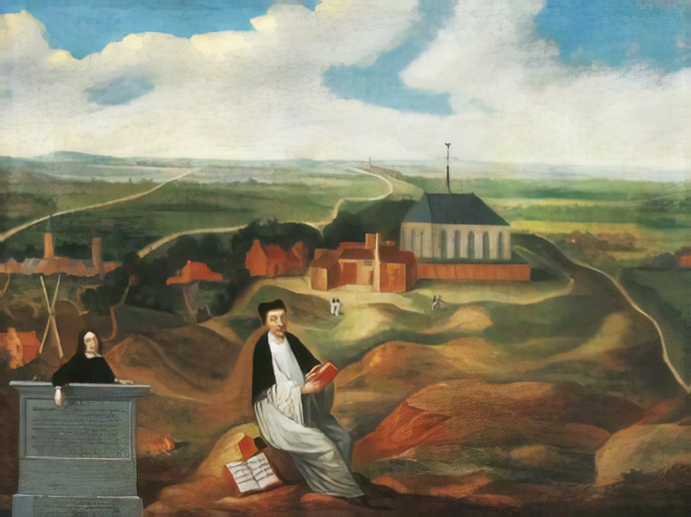
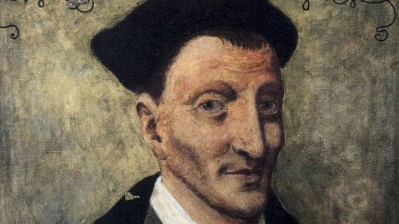

0111 0618 O Love, How Deep, How Broad, How High _Thomas
á Kempis 上主之愛長闊高深 ▲ DEO
GRACIAS
| 簡介
O
Love, How Deep, How Broad, How High |
| Reducing a 23-stanza Latin text to
these five English stanzas intensifies this survey of the mystery of the
Incarnation and strengthens the repeated reminder that all was done “for
us.” A comparable tone of proclamation animates this 15th-century song
celebrating a military victory. |
|
|
|
1 O love, how deep, how broad, how high!
It fills the heart with ecstasy,
that God, the Son of God, should take
our mortal form for mortals’ sake.
2 For us he was baptized and bore
his holy fast, and hungered sore.
For us temptation sharp he knew,
for us the tempter overthrew.
3 For us he prayed, for us he taught,
for us his daily works he wrought,
by words and signs and actions thus
still seeking not himself but us.
4 For us to wicked hands betrayed,
scourged, mocked, in purple robe arrayed,
he bore the shameful cross and death,
for us at length gave up his breath.
5 Eternal glory to our God
for love so deep, so high, so broad;
the Trinity whom we adore
forever and forevermore.
Source: Voices Together
#303
|
淵深莫測—上主恩愛，高深、寬廣，超越思想：
上主聖子為人而來，至高真神取人形像。
因我緣故祂受水禮，甘忍飢餓、禱告、禁食，
為眾親經險惡探試，為眾推翻魔鬼勢力。
基督不息教導、代求，天天工作實踐使命，
言行、聖蹟適人需要，無私一生為人傾盡。
被賣交於罪惡勢力，遭鞭、戲弄、紫袍嘲諷，
代背、被釘十架羞恥，為眾犧牲，忍辱負重。
基督復生驅散死蔭，升天登基，執掌權柄，
自天派遣聖靈降臨—振興、安慰、帶領子民。
光輝榮耀歸於我主，因祂恩愛長、闊、高、深！
崇敬盡歸三一上主，頌歌歡欣直到永恆。
阿們。 |
https://www.cco.cuhk.edu.hk/chaplaincy/uploads/ServiceBulletin/ServiceBulletin_20210228.pdf
 |
| |
|
-
https://youtu.be/ZkVGKJUd64E O
Love, How Deep, How Broad, How High (SATB) - Lloyd Larson
- https://youtu.be/ro78Htb7UM0
O Love, How Deep, How Broad, How High (Tune Eisenach) [with lyrics for
congregations]
-
https://www.youtube.com/watch?v=V4EqhtO1FPc PASTORS SINGING: "O Love
,How Deep, How Broad, How High"
https://youtu.be/clC8Q0_piY0 O
Love, How Deep, How Broad, How High (Deus Tourum Miltum)
- https://youtu.be/aXX2V2SEweM
Thomas à Kempis: The Imitation of Christ
-
https://www.youtube.com/watch?v=Z9vNokjYupU
https://www.youtube.com/watch?v=pbRqrkSI8vE 主爱长阔高深 倪柝声诗歌,声乐版
-
https://www.hkchurchmusic.org/index.php/component/allvideoshare/video/hup217
新普天頌讚 #217 上主之愛長闊高深 譚靜芝博士 聖詩分析
https://hymnary.org/text/o_love_how_deep_how_broad_how_high
The first stanza of this hymn echoes the prayer of the apostle Paul: “And I pray
that you, being rooted and established in love, may have power, together with
all the Lord’s holy people, to grasp how wide and long and high and deep is the
love of Christ, and to know this love that surpasses knowledge” (Ephesians
3:17-19 NIV). Jesus Christ came to this earth to show God’s love for us, as John
writes (1 John 4:9). That phrase – “for us” – appears repeatedly in this hymn,
reminding us why Christ bore temptation, torture, and death for us, and why He
rose triumphantly and ascended to the right hand of God.
Text:
Though this text has been attributed to Thomas à Kempis due to similarities with
his famous devotional book, The Imitation of Christ, it is likely
an anonymous text. Written in the fifteenth century, the Latin original had
twenty-three stanzas. Benjamin Webb translated eight of them into English. These
were published in The Hymnal Noted in the early 1850s.

The text is fairly stable, with a few variations in the wording of some lines
and some differences on exactly which stanzas are included. Some hymnals include
a stanza beginning “He sent no angel to our race” as the second, but most omit
this one. Though there is some variation in the last doxological stanza, most
hymnals have the one beginning “All glory to our Lord and God,” which refers
back to the first stanza in its second line, “For love so deep, so high, so
broad.”
The first stanza extols the extent of God’s love that prompted Christ to come
and redeem us, and the final stanza is a doxology. The intervening stanzas tell
the story of Christ’s life, from birth to ascension.
Tune:
The tune most commonly associated with this text also comes from the fifteenth
century. DEO GRACIAS, also known as AGINCOURT, comes from music written to
celebrate Henry V’s victory over the French at the Battle of Agincourt in 1415.
Instead of accepting personal glory for the victory, Henry V insisted that
thanks be given to God for the victory, hence the title meaning “thanks be to
God” in Latin. The first use of this tune as a hymn tune is in the English
Hymnal of 1906, with the text “O Saviour, Jesu, not alone.”
Another tune that is used with this text is PUER NOBIS, also from the fifteenth
century. It is the tune associated with a Latin Christmas hymn titled “Puer
nobis nascitur,” which is a trope (that is, an additional section of text and
music elaborating an existing chant) on a Mass benediction, “Benedicamus
Domino.”
When/Why/How:
Since the theme of many of the stanzas is the love of Jesus as shown through His
life, this hymn is appropriate for seasons that focus on such themes, such as
the later part of Epiphany, Lent, Holy Week, or Ascension. A simple choral
setting, such as “O
Love, How Deep,” with original music by Jane Linder, could be used as a
choral anthem. For congregational accompaniment, “The
Art of Hymn Playing” contains a setting of DEO GRACIAS with a Renaissance
sound. “Variations
on PUER NOBIS” is a collection of twelve short settings of this tune which
can be used for hymn introductions; some can also be used to accompany
congregational singing.
Tiffany Shomsky,
Hymnary.org
Notes
Scripture References:
st. 1 = Eph. 3:18-19, Phil. 2:7
st. 2 = Matt. 3:13, Matt. 4:1-11
st. 3 = John 17:9
st. 4 = Rom 4:25, 1 Pet. 2:24
st. 5 = Rom. 8:34, John 16:7, 13
The original anonymous
text in Latin ("O amor quam ecstaticus") comes from a fifteenth-century
manuscript from Karlsruhe. The twenty-three-stanza text has been attributed
to Thomas à Kempis because of its similarities to writings of the Moderna
Devotio Movement associated with à Kempis. (that movement was an important
precursor of the Reformation in the Netherlands). However, there is
insufficient proof that he actually wrote this text.
Benjamin Webb (b. London,
England, 1819; d. Marylebone, London, 1885) translated the text in eight
stanzas. It was published in The Hymnal Noted (1852), produced
by his friend John Mason Neale (PHH
342). Webb received his education at Trinity College, Cambridge,
England, and became a priest in the Church of England in 1843. Among the
parishes he served was St. Andrews, Wells Street, London, where he worked
from 1862 to 1881. Webb's years there coincided with the service of the
talented choir director and organist Joseph Barnby (PHH
438), and the church became known for its excellent music program. Webb
edited The Ecclesiologist, a periodical of the Cambridge
Ecclesiological Society (1842-1868). A composer of anthems, Webb also wrote
hymns and hymn translations and served as one of the editors of The
Hymnary (1872).
The text has a wide scope,
taking in all of Jesus’ incarnate life: his birth (st. 1); identification
with human affairs (st. 2); daily ministry (st. 3); crucifixion (st. 4);
resurrection, ascension, and gift of the Spirit (st. 5); the final stanza is
a doxology (st. 6). Thus the text summarizes Christ's life in the same
manner as the Apostles' Creed. A striking feature is the text's emphasis on
the fact that Jesus accomplished all of this "for us"; "for us" occurs at
least a dozen times! The redemptive work of Christ is very personally, very
corporately applied.
Liturgical Use:
Epiphany, especially later in the season; Lent, Holy Week, Easter,
Ascension, and at many other times; the final stanza makes a good doxology
for Epiphany, Lent, or the Easter season.
--Psalter Hymnal
Handbook
PUER NOBIS NASCITUR
Composer: Michael Praetorius

Notes
PUER NOBIS is a melody
from a fifteenth-century manuscript from Trier. However, the tune
probably dates from an earlier time and may even have folk roots. PUER
NOBIS was altered in Spangenberg's Christliches GesangbUchlein (1568),
in Petri's famous Piae Cantiones (1582), and again in
Praetorius's (PHH
351) Musae Sioniae (Part VI, 1609), which is the basis
for the triple-meter version used in the 1987 Psalter Hymnal. Another
form of the tune in duple meter is usually called PUER NOBIS NASCITUR.
The tune name is taken from the incipit of the original Latin Christmas
text, which was translated into German by the mid-sixteenth century as "Uns
ist geborn ein Kindelein," and later in English as "Unto Us a Boy Is
Born." The harmonization is from the 1902 edition of George R.
Woodward's (PHH
403) Cowley Carol Book.

PUER NOBIS is a
splendid tune in arch form that lifts and then propels itself along to
its final note. Try having the choir sing stanzas 1 and 2 in unison.
Then all could sing stanzas 3 and 4 in unison with the choir providing
the harmony. Stanza 4 could also be sung in canon at one measure, with
either a strictly unison accompaniment or one composed to accommodate
the canon. All worshipers could sing stanza 5 in unison again. Use a
rather light organ registration, but change to a full one for stanza 5.
--Psalter Hymnal
Handbook, 1988
https://www.umcdiscipleship.org/resources/history-of-hymns-o-love-how-deep
By C. Michael Hawn
O Love, How Deep
Fifteenth-Century Latin
The United Methodist Hymnal, No. 267
O love, how deep, how broad, how high,
It fills the heart with ecstasy,
That God, the Son of God, should take
Our mortal form for mortals’ sake.
We enter the season of Lent knowing how the story ends. This does not make the
story any less important or meaningful. To the contrary, knowing the beginning,
middle, and end of the story adds to the anticipation.
The hymn “O Love, How Deep” provides the opportunity for congregations to sing
the story of salvation from the birth through the ascension of Christ—a rare
scope for a hymn. The incipit (the opening line of a poem) appears to be drawn
from Ephesians 3:17-18 (NIV*): “How wide and long and high and deep is the love
of Christ.”
The original anonymous poem consists of 23 stanzas in 92 lines with rhymed
couplets of aabb. Most hymnals include only six stanzas. The United Methodist
Hymnal includes a translation of stanzas 2 and 9-12, plus an unidentified
concluding doxological stanza. The translator from a fifteenth-century Latin
creedal and devotional poem began with the second stanza “O amor quam exstaticus.”
The Latin was found in a fifteenth-century Karlsruhe (Germany) manuscript and
printed in a volume in 1853. Some have attributed the text to Thomas à Kempis
(b. c. 1380 – d. 1471), the fifteenth-century German monk who is generally said
to have authored the important devotional work, The Imitation of Christ (c.
1427), because of the similarity in tone and theme of the two sources and the
similarity between the handwriting of the Latin poem and that of à Kempis.
The English translation comes to us through the efforts of Benjamin Webb
(1819-1885), an Anglican clergyman who served as a curate in several parishes in
England. Webb was the editor of two journals, The Ecclesiologist (1842-1868) and
the Church Quarterly Review (1881-1885). His connections with the Oxford
Movement’s John Mason Neale (1818-1866), a movement that provided English
translations of Greek, Latin, and German texts, led to a collaboration with
Neale on two volumes, An Essay on Symbolism and A Translation of Durandus. These
scholarly publications influenced his contributions to two important English
hymnals, The Hymnal Noted (1854) and The Hymnary (1872).
The missing stanzas include the one that follows the first stanza printed
in the hymnal:
He sent no angel to our race
Of higher or of lower place,
But wore the robe of human frame
Himself, and to this lost world came.
The following stanza was placed before the third printed in the hymnal:
Nor willed he only to appear;
His pleasure was to tarry here;
And God and Man with man would be
The space of thirty years and three...
The hymn begins with sheer wonder and ecstasy at the mystery of the
Incarnation. A distinctive feature of the hymn is the almost incessant
repetition of the two words, “for us” in stanzas 2-5—twelve times! The
effect is to stress that every event and action of Christ’s life was done for
the benefit of humankind. The willingness of God to take on human form in Jesus
was for the sake of all humanity. Thus, the theology of the great kenosis
(self-emptying) hymn found in Philippians 2:5-11 permeates the text.
Numerous scriptural allusions saturate the stanzas.
Stanza two
refers to Christ’s baptism (Matthew 3:13-17), temptation, and fasting in the
wilderness (Matthew 4:1-11).
Stanza three
comments on Christ’s daily activities—“words and signs and actions”—as a
ministry “not for himself, but us.” This stanza alludes to Christ’s ministry as
found throughout the gospel accounts.
Stanza four,
referring to Christ’s suffering, draws upon a multitude of scriptural passages
including 1 Peter 3:18, 2:24; and I Thessalonians 5:10. The resurrection and
ascension are themes of stanza five, referencing Matthew 28.
The final stanza is a doxology that appears in several variations. An
earlier version uses language that is more archaic for the ears of the modern
singer:
All honor, laud, and glory be,
O Jesus, virgin-born to Thee!
All glory, as is ever meet
To Father and to Paraclete.
A later version is less archaic:
To him whose boundless love has won
salvation for us through his Son,
to God the Father, glory be
both now and through eternity.
The most common version adapted for recent hymnals effectively draws upon the
initial line of the hymn, though the adjectives are rearranged:
All glory to our Lord and God
For love so deep, so high, so broad...
The tune DEO GRACIAS is also from the fifteenth century. It was originally a
victory song, “Our King went forth to Normandy,” in celebration of Henry V’s
conquest over the French at Agincourt in 1415. In some hymnals, the melody is
called AGINCOURT. If sung in a lively rhythmical manner, this melody carries the
story of the life of Christ in a triumphal manner.
As we begin the season of Lent, we look ahead with joy toward later events in
the story – a story that is still unfolding in the lives of Christians today.
C. Michael Hawn is University Distinguished Professor of Church Music, Perkins
School of Theology, SMU.
*Holy Bible, New International Version®, NIV® Copyright © 1973, 1978, 1984, 2011
by Biblica, Inc.® Used by permission. All rights reserved worldwide.
https://blog.cph.org/worship/o-love-how-deep-reflection
The
Christian faith presents certain truths about Jesus Christ—His birth, death, and
resurrection, to name a few—and teaches that these events were real. Many people
consider our faith as simply believing in Jesus; however, Scripture tells us
that even the demons believe in Jesus (James 2:19). Our faith rests on something
deeper: Jesus became man, died, and rose for
us. Perhaps no hymn speaks to this simple yet glorious truth better than “O
Love, How Deep.”
“O
Love, How Deep” (LSB 544) poetically
presents this aspect of our faith. In fact, the text uses the phrase for
us thirteen times! This hymn tells us the story of Christ but does more
than just list the events of Christ’s life. In fact, telling the story of Christ
like we find it told in “O Love, How Deep” means that we put the events of
Christ’s life into context—in this
case, the context that He has done all these things for us, His children.
The Music
The
tune of “O Love, How Deep”, DEO GRACIAS, gives the hymn a sense of triumph. In
fact, it was originally a fifteenth-century song of conquest. Simply by singing
the first stanza, then, we have a sense of where the hymn is going; we already
know the ending of the story. The music tells us that the subject of the hymn,
Christ, is a conquering hero. He is triumphant.
We see
here the importance of appropriately pairing the text and music, for the music
itself gives us a sense of the story. This Renaissance-period melody puts us in
mind of a conquering king. Its strong beat and syncopated rhythm, qualities of
music from that era, give the text force and confidence. This melody points us
to the end, to Christ’s triumph over the enemy.
The Story
Stanza
1 of “O Love, How Deep” gives us a sense of the wonder of God’s love. Its incipit,
or opening line, is taken from Ephesians 3:17–19:
“So
that Christ may dwell in your hearts through faith—that you, being rooted
and grounded in love, may
have strength to comprehend with all the saints what is the breadth and length
and height and depth, and
to know the love of Christ that surpasses knowledge, that you may be filled
with all the fullness of God.”
Right
away, the first stanza introduces us to Jesus and the wonder of His willingness
to become man:
O
love, how deep, how broad, how high,
Beyond all thought and fantasy,
That God, the Son of God, should take
Our mortal form for mortals’ sake!
The
rest of the stanzas proceed to tell us the story of Christ’s life in order. It
is a miniature Church Year, a celebration of Christ’s saving work. In these
stanzas, we find Christ’s incarnation, His baptism, His fasting and temptation
in the wilderness, His ministry, His betrayal, His death, His resurrection, His
ascension, and, finally, His sending of the Holy Spirit to us at Pentecost. It
is a familiar story set poetically and triumphantly.
The Theme
Finally, this hymn tells us the story for a reason. The repetition of for
us throughout the stanzas tells us why this knowledge of Christ is so
important. He is not simply a savior—He
is our Savior. He, as our opening
stanza tells us, became mortal “for mortals’
sake.”
At the
school where I teach, the entire student body will memorize this hymn throughout
the year and sing it at our final chapel. What do we want these students to
know? That not only does God love, but God loves you.
Our verse of the year is Romans 5:8: “But God shows His love for us in
that while we were still sinners, Christ died for us.” (Did you notice how for
us occurs twice in that short verse?)
This
aspect of our faith, Christ’s love for us,
puts me in mind of Luther’s 1530 Christmas sermon on Luke 2:1–14. In this
sermon, he speaks about the angel’s greeting to the shepherds. The angels do not
simply tell those men in the field that “this day is born in the city of David a
Savior, who is Christ the Lord.” No, the angels tell the shepherds a Savior is
born “unto you”. Luther says:
Therefore this [the proclamation of the angel: to you this day is born a
Savior] is the chief article, which separates us from all the heathen, that
you, O man, may not only learn that Christ, born of the virgin, is the Lord
and Savior, but also accept the fact that he is your Lord and Savior, that you
may be able to boast in your heart: I hear the Word that sounds from heaven
and says: This child who is born of the virgin is not only his mother’s son.
I have more than the mother’s estate; he is more mine than Mary’s, for he was
born for me, for the angel said, “To you” is born the Savior. Then ought you
to say, Amen, I thank thee, dear Lord. (Luther’s Works 51:215)
And to
this love of God for us, this sacrifice
of His only son on the cross for us,
may we also reply “Amen, I thank thee, dear Lord.”
The
quotation from Luther’s Works is from the American Edition: vol. 51 © 1959 by
Fortress Press. Used by permission.
https://www.stjohnsfc.org/ministries/worship/1190-deo-gracias
-
Written by Nelly Sanford
-
Created: January 26 2014
Instead of a “hymn of the month” for February, we are looking at a “tune of the
month.” In our worship services we will sing the tune “Deo Gracias” to two
hymns, “O Love How Deep” and “Oh, Wondrous Type, Oh, Vision Fair.” Both of these
texts have their roots in the Roman Catholic tradition. The history of the tune
is less certain. The Lutheran Book of Worship cites “Deo Gracias” as a 15th
century English tune, while other sources state that it is an anonymous Latin
tune. Regardless of its lost origin, the tune is lovely, minor and powerful. The
rhythm has a punch in three beats with an ancient feel, reminiscent of, perhaps,
waltzing monks!

The Latin Hymn, O amor quam exstaticus, “Oh, Love, How Deep”, has no
known writer, but the text is credited to Thomas a Kempis (c. 1380–1471). He
wrote the classic devotional work “The Imitation of Christ”, one of the earliest
printed books, which seems to have similar content to the words of the hymn.
The original Latin text has 27 verses. The Lutheran Service Book includes only
seven of them. The verses tell the story of Christ, from his taking of human
form, baptism, temptation, miracles, death and resurrection. All is framed in
the beautiful excerpt from Ephesians 3 on which the first and last verse are
based: “ … to grasp how wide and long and high and deep is the love of Christ …
.”
Thomas a Kempis was raised by peasant parents until age twelve, when he was sent
for an education with the Brethren of the Common Life in Holland. At age
eighteen he became part of the community and was ordained as a priest in 1413,
at age 33. He worked at Mount St. Agnes near Zwolle, copying manuscripts,
editing and writing. It is believed that he compiled and edited Imitatio
Christi in 1471, the year of his death.
The hymn as we know it was translated by Benjamin Webb, who was born in London
in 1918. Webb was educated at Cambridge, earning a Master’s degree in 1845. He
became the rector at St. Andrews in London and worked with his organist, Joseph
Barnby, to provide the congregation with music he considered equal to that of
the concert halls in London. The two collaborated to produce “lavish choral
services, which were really in the nature of sacred concerts.” The paid choir
was very large and created to ensure impressive choral Roman Catholic masses. It
may be noted that Webb made this hymn translation prior to his position at St.
Andrews.

“Oh, Wondrous Type, Oh, Vision Fair” is an old Transfiguration hymn. It first
appeared in a Latin liturgy used in the 1400s. Though the version of the hymn we
sing differs quite a bit from the original, having gone through translation and
“Lutheranization”, we still maintain the images of Christ revealed in glory in
the presence of Moses and Elijah.
We hope you enjoy this old hymn tune from its exclamatory beginning to the end.
Sing loudly with the last two lines of "Oh, Love, How Deep”, “The Trinity whom
we adore,/Forever and forevermore!”
Saint John’s Board of Worship and the Arts oversees the details of the
congregation’s worship life.
https://baike.baidu.com/item/%E9%81%B5%E4%B8%BB%E5%9C%A3%E8%8C%83%20%2F%20%E6%95%88%E6%B3%95%E5%9F%BA%E7%9D%A3%20%2F%20%E5%B8%88%E4%B8%BB%E7%AF%87
《效法基督》是深受普世教会所喜爱的一本中世纪灵修名著，据说在教会书刊中除《圣经》外，这是译本最多的一本书，有六千来种不同的版本。在天主教内，它几乎是每个神职人员的必修课，有人甚至将它列为必读的“圣书”之一。东正教许多爱主的人，也喜欢读这本书。在基督教中，也流传很广。该书有几种书名不同的中译本，如《效法基督》、《遵主圣范》、《师主篇》等等。可以说，《效法基督》是基督教属灵宝库中的奇珍瑰宝之一。

《效法基督》是由跟随基督的人，在十字架的道路上受过操练，受过对付，经过艰辛，经过逆境之后，从敬虔度日的经历中凝聚而成的灵性结晶，在基督里生长成熟的生命硕果。它不只给人以神学知识，道理教训，更是引领爱慕基督的人们直接到主的面前，亲近主、祈求主、事奉主、敬拜主。尽管这本书不可能绝对避免，也不可能完全超脱当时在修会中盛行的苦行禁欲倾向，乃至当时的某些传统习惯，但在基督教的历史中，它始终不失为一股冲破阴云于沉寂的无声的劲风。它给信徒指出了一条认识灵里生命的路，一条爱神，追求在日常生活中与主晤对，与神相谐，使自己消失在神里面，达到与神合一的路。它将基督的平安、喜乐、安慰与丰富，如同满蒂芳香、滋润之花雨，浇灌在圣徒的里面和教会中间；又如基督复活与更新之光，照彻十四世纪以来无数圣徒的心灵，希望书中那倾向基督、倾向十字架的能力，使我们里面与它有所响应，让我们谦卑俯伏归向神，爱慕基督，并在人间放射出源于美好灵性的火焰与光华。希望“效法基督”的呼召始终吸引我们，让我们满有基督的生命，在爱神、爱基督、爱众人的道路上不断追求。
作者介绍编辑 语音
作者 Thomas A' Kempis (1380?-1471) 为一中世纪修道士。其名准确的翻译应为“坎贝斯的多马”，多马 (Thomas)
是他的名字，他本姓“Hamerken”， 坎贝斯是他出生的一个德国小城。他穷毕生精力，读经、祷告、默想、灵修、讲道、写作、劝勉。以下三篇文章译自英文版本：The
Imitation of Christ, Moody Press, Chicago,1984.

熱誠的基督徒今何在？——湯瑪斯•阿•金碧士（1380-1471）
湯瑪斯•阿•金碧士（Thomas á Kempis）是一位天主教神父，也是聖奧古斯丁修會的一位活躍成員。他熱誠地教導年輕上進的新信徒，寫作了近三打靈修方面的書籍，包括《靈魂的獨白》（The
Soul’s Soliloquy）、《論獨處與寧靜》（On Solitude and
Silence）。當他看見信徒的信仰與行為脫節，立刻向兄弟姐妹們寫了一篇緊急請願書，即後來他最著名的代表作——《效法基督》（The Imitation of
Christ）。1
他的話代表了當時的典型神學，也回應了對好行為的需要。金碧士不是呼籲人重生得救，而是激勵那些已承認基督信仰的人，讓他們為神的國努力行出好行為。這個呼籲對今天也同樣適用。
多數人更渴望聽從這個世界，不聽從神；許多人更願意追隨自己肉體的私欲，而不願追隨神的美意……
人們會為一點微薄的薪水行很遠的路，但是許多人卻不會為永生多走一步。他們為可憐的報酬奮勇直前，有時還不知羞恥地為一分一毛斤斤計較；甚至為一些愚蠢的承諾或雞毛蒜皮的小事，不惜工作到筋疲力盡。
但是，為那永不改變的良善、為那大過所有賞賜的獎品、為那最高的榮譽和永不止息的榮耀，人們啊，唉！你們卻如此懶惰，連最小的努力都不願付出。你們這些懶惰、一直抱怨的僕人，若你們看到那些忙著丟掉靈魂的人比你們求永生還更熱心，真應當覺得羞恥！他們追求虛空的迷夢比你們追尋真理所得到的歡喜還要大。2
一個人若完全獻身于追尋愉悅，卻忘記了先前屬靈的貧窮，是最輕率的；因為他同時也會忘記對神的純真敬畏——即畏懼丟失已得的恩典。一個人若在艱難困苦時期，畏縮絕望，所思所想不能彰顯信靠[神]，那他也是愚頑的。3
注：
1
還有其他人被認定是《效法基督》的作者，但是總體的證據更傾向于湯瑪斯•阿•金碧士。流傳下來最早的抄本上有金碧士的手跡：“在聖阿各尼斯山（Mount St.
Agnes），靠近佐勒（Zwolle），成書於我們主的年1441，出於湯瑪斯•金碧士弟兄之手。” 湯瑪斯•阿•金碧士，《效法基督》（Thomas á
Kempis, The Imitation of Christ，由Jospeh N. Tylenda編譯。Vintage Books; New York,
1998），xxix。
2
湯瑪斯•阿•金碧士，《效法基督》（Thomas á Kempis, The Imitation of Christ，由Jospeh N. Tylenda編譯。Vintage
Books; New York, 1998），76頁。
3
同上，86頁。
https://www.ficfellowship.org/Imitating-Christ-and-spiritual-formation.html
作者: 邱清萍 ｜2018年9月15日
基督徒的人生是從「信耶穌」到「像耶穌」。信耶穌，因為只有祂能拯救我們脫離罪與魔；像耶穌，只有這樣我們才能勝過自己和世界。
耶穌剛出來傳道就呼召門徒，對他們說：「來跟從我。」（太四19；約一43）當時除了門徒外，還有許多人因耶穌能解決他們的困難如醫病趕鬼，又行各樣的神蹟奇事，滿足他們的需要，他們就「跟著他。」（太四25）
「跟著」與「跟從」有很大的分別。今天教會內外都有追求歷命經歷的熱潮，若我們只是跟風地「跟著」耶穌，待祂像其他宗教偉人一樣，遲早會感到迷失。當時許多人因耶穌是「名人」，是他們心目中所期盼的「救世英雄」就跟著祂，後來發現祂竟是被定罪的「犯人」，一夜之間他們變成高喊「釘死祂」的盲目群眾。
耶穌卻呼召門徒「跟從」祂，跟從就是效法祂的樣式。許多人說宗教不外乎遵守道德誡律或履行宗教儀式，耶穌卻說這些都是沉重的擔子，只會使人感到「勞苦擔重擔」，得不著安息。祂邀請我們帶著柔和謙卑的心，負祂的軛，學祂的樣式（太十一28-30）。耶穌用了當時農耕的比喻，指出祂與跟從祂的人的關係，就像兩隻耕田的牛同負一軛，力是大牛出的，小牛在旁邊跟著走，照著大牛的樣式來勞動。耶穌指出跟從祂的人一個先決的條件是謙卑的心。
人最重的擔子不在外面，也不是從別人或環境而來，乃來自裡面的自我中心、驕傲和自義。其實，專注自己的人常會感到不安全，容易與人產生矛盾和衝突，帶來挫折、失望、懼怕和忿怒的情緒。這些都成為重擔，要得安息就要來跟從主，學祂的樣式——柔和謙卑。要謙卑首先要放下自己。
這是為甚麼耶穌說：「若有人要『跟從』我，就當『捨己』，背起他的十字架來『跟從』我」。跟從祂就要捨己，放下自己，效法祂虛己，以祂的心為心（腓二5-8）。效法耶穌不是從外面的言行開始，必須從裡面的心開始。但是誰能掌握自己的心呢？難度極高！
我們只能好像小牛依附大牛一樣，與主同負一軛，讓祂牽著我們走。同負一軛表示同心同行，在愛中聯合。保羅在書信中用「在基督裡」164次，教導我們如何與主同釘十架（加五24；六14）、同死、同埋葬、同復活（羅六1-11）、同坐在天上（弗二6）及同藏在神裡面（西三1-4），在主的愛中深切與祂聯合。靈命塑造最終的目標是與主的生命聯合，以致「基督成形在我們的心裡」（加四19）。
這種與主在愛中聯合的生命會經過一個「有諸內而形於外」的轉化過程，而敬虔的操練（提前四7-8）則是我們在這過程中的預備工夫。操練為了開放自己，騰出空間，使聖靈沒有阻攔的完成祂塑造的工作。正如魏樂德(Dallas
Willard)
教導說:「操練敬虔是做自己能做的，以致自己不能做的有可能發生」。我們自己不可能成聖，不可能活出基督的生命；但我們可以預備自己這個器皿，使聖靈有空間可以成就祂偉大的作為。
耶穌邀請說:「人若渴了，可以到我這裡來喝。」承認自己乾渴而願意來到主那裡的人必是柔和謙卑，真正想跟從主的人。主應許祂的生命，透過聖靈的內住，在我們裡面成為活水的泉源，湧流出活水的江河（約七38），推動著我們的人生，在我們的生活處境流露出祂的樣式來。
我們如何認知主的樣式，以致於我們可以與祂同心同行，跟從和效法祂呢？歷世歷代，許多跟從祂的人來過，也喝過這生命的活水，他們如何在生活處境中活出祂的樣式？十五世紀的金碧士(Thomas
Kempis) 在他的不朽著作《效法基督》 (Imitation of Christ)
裡很詳盡的羅列出主的樣式和如何效法祂，例如「效法基督看輕世界的虛榮」、「效法基督忍受暫時的苦難」、「效法基督捨己背負十架」等，也有篇章提及操練的途徑，如「認識自己」、「安息於上帝裡面」、「內心平安與靈性進步之祕訣」、「謙卑聽神的話」等。
 近代的傅士德
(Richard Foster) 在《活水溪流》(Streams of Living
Water)一書把福音書裡耶穌在世生活為人的樣式分成六部份，好像六條溪流匯合成為潺潺而流的江河，我們若跟從祂的腳蹤，效法祂的樣式，就可活出祂所應許的豐盛生命。這六部份包括:
近代的傅士德
(Richard Foster) 在《活水溪流》(Streams of Living
Water)一書把福音書裡耶穌在世生活為人的樣式分成六部份，好像六條溪流匯合成為潺潺而流的江河，我們若跟從祂的腳蹤，效法祂的樣式，就可活出祂所應許的豐盛生命。這六部份包括:
一、不住禱告與神同在 (Contemplative Life)
二、彰顯敬虔的美德 (Virtuous Life)
三、經歷聖靈的大能 (Spirit-Empowered Life)
四、入世行公義好憐憫 (Compassionate Life)
五、宣講福音好消息 (Word-Centered Life)
六、信心與行為實踐 (Incarnational Life)
另一方面，傅士德從教會歷史不同時代的屬靈覺醒，所匯聚而成的「運動」刻畫出耶穌的不同形像。他認為這些覺醒是因為基督的身體在當時代的表現，忽略了一些重要的真理或活不出耶穌更全面的樣式，於是聖靈就會感動有些領袖起來矯正或補充，漸漸凝聚了力量而產生巨流。可惜因人的軟弱，有時這些運動又會矯枉過正而致極端，或彼此對立。事實上，任何時代神的教會若都能兼有這幾方面的特色，作出美好的平衡，基督的形像就會更鮮明，而教會的見証也會更有力。
耶穌的生命像活水泉源，流過教會的歷史，形成不同的傳統（運動），像河溪向四方奔流。傅士德列出六個經過時間考驗的傳統，反映以上提及基督豐富的生命樣式：
-
「禱告靜修傳統」如第四世紀的沙漠教父教母、第六世紀的本篤修會、十六世紀的莫拉維亞運動，和十七世紀的敬虔運動。
-
「聖潔運動傳統」如十二世紀的西篤會、十六世紀的天主教改革、十六世紀的清教徒、十八世紀的聖潔運動、廿世紀的凱西克靈修會等。
-
「聖靈大能傳統」如方濟會、近代的五旬節和靈恩運動等。
-
「社會公義傳統」如十八世紀的廢奴運動、十九世紀的選舉權運動、廿世紀的美國民權運動等。
-
「福音宣教傳統」如十三世紀的道明會、十六世紀的復原教改革運動、十八世紀的大覺醒和宣教運動、廿世紀的學生志願佈道等。
-
「道成肉身傳統」如第十四至十六世紀的文藝復興及廿世紀的基督徒專業協會等。
「效法主」不只是個人靈命塑造的目標與途徑，也是教會生活的座標。
https://matters.news/@oldstone9911/%E6%AD%90%E6%B4%B2%E4%B8%AD%E4%B8%96%E7%B4%80%E6%99%9A%E6%9C%9F%E7%9A%84%E5%AE%97%E6%95%99%E8%88%87%E9%9D%88%E6%80%A7%E6%B0%9B%E5%9C%8D-bafyreieoyzg4k5gr2klgfdkzghkjjeeobzvtirfztqegou7aixemeivwym
中世紀晚期的歐洲社會充滿一股對魔鬼撒旦的恐懼意識。漢姆（Berndt Hamm）在《早期路德》一書中描述了當時歐洲人對撒旦的恐懼：
當時的人經常擔心撒旦與敵基督，會攻擊、破壞。因此人們必須持續努力對抗魔鬼的侵蝕，以便脫離汙穢，好叫自己保持潔淨。要達到這樣的目的，不僅要每日與罪惡對抗。而且要對抗那些撒旦力量的化身、對抗那些真理與秩序的仇敵，也要確實地對抗異端、巫師、猶太人、土耳其人，以及一切與自己宗派立場對立的人。[1]
基於對魔鬼撒旦的恐懼，當時歐洲人的生活中就表現出對自身潔淨的要求，深恐自己因為沾染汙穢而落入撒旦的網羅之中。因此，像閔次爾的著作中常用的「苦基督（Bitter
Christ）」一詞，就與這種對基督徒行為的嚴厲要求有關，。
雖然當時的教會的靈修操練仍然以強調受苦作為進路，其上帝觀也還是「上帝是公義的審判官」的想法。然而，中世紀晚期開始興起一派非主流觀點，那是專注於基督受苦(而非個人受苦)。一直到1500年左右，正式路德成長與受教的年代，此一以「基督受苦」為焦點的靈修操練才蔚為流行。[2]從「默想基督受苦」進到「效法基督受苦」就只剩下一步之遙了。
這個時期也正逢「現代靈修運動」（Devotio
Moderna）在十六世紀的興起，該運動之典型作品，金碧士（Thomas à Kempis，c.1380-1471）的《效法基督》（Imitation
of Christ），正大為風行。有別於過去在大學中發展的神學只局限於學者，「現代靈修運動」反倒是風行於修道院修士、弟兄會成員與平信徒之間。這三個族群雖然缺乏高深神學訓練，但卻願意在靈性上勉力追求，故促成了這一類作品的風行。此現象也呼應前述之「中世紀神秘主義的民主化」的風潮。
這一運動中之相關著作的特色，是以效法基督風範做為人生目標，默想對象不是基督的本質與屬性，而是祂的生平，特別是祂受苦的事蹟。與托名丟尼修傳統不同的是，丟尼修把重點放在默想與神合一，日耳曼傳統與現代靈修運動是以效法祂的犧牲捨命為中心。[3]
從以上的背景來看，路德與閔次爾二人都成長於16世紀初的德意志東部地區，時代氛圍與受教的過程，都在中世紀晚期的文化背景中，此一時期的教育環境，主要來自三個重要的源頭，除了教會官方的經院神學、新興的大學中興起的人文主義，還有一不可忽視的影響力，就是當時已經普及於民間，連市井庶民之間都風行的神祕主義，路德與閔次爾的神學發展也就與這樣的時代脈絡息息相關。
[1] 漢姆。早期路德：信心的突破。李淑靜、林秀娟合譯（新竹市：中華信義神學院，2017年）。36頁。
[2] 同上, 35頁
[3] 林榮洪。基督教神學發展史（３）：改教運動前後(香港：中國神學研究院，1990年)。 98頁。
《遵主聖範 / 效法基督 / 師主篇》是1991年出版的圖書，作者是金碧士多馬·阿·坎貝斯。
書 名遵主聖範 / 效法基督 / 師主篇作 者金碧士多馬·阿·坎貝斯 (Tomas A
Kempis)出版時間1991年ISBN9789623660037原作名The Imitation of Christ
目錄
1 內容介紹
2 作者介紹
內容介紹編輯
《效法基督》是深受普世教會所喜愛的一本中世紀靈脩名著，據説在教會書刊中除《聖經》外，這是譯本最多的一本書，有六千來種不同的版本。在天主教內，它幾乎是每個神職人員的必修課，有人甚至將它列為必讀的“聖書”之一。東正教許多愛主的人，也喜歡讀這本書。在基督教中，也流傳很廣。該書有幾種書名不同的中譯本，如《效法基督》、《遵主聖範》、《師主篇》等等。可以説，《效法基督》是基督教屬靈寶庫中的奇珍瑰寶之一。
《效法基督》是由跟隨基督的人，在十字架的道路上受過操練，受過對付，經過艱辛，經過逆境之後，從敬虔度日的經歷中凝聚而成的靈性結晶，在基督�堨耵囍釆籅漸糽R碩果。它不只給人以神學知識，道理教訓，更是引領愛慕基督的人們直接到主的面前，親近主、祈求主、事奉主、敬拜主。儘管這本書不可能絕對避免，也不可能完全超脱當時在修會中盛行的苦行禁慾傾向，乃至當時的某些傳統習慣，但在基督教的歷史中，它始終不失為一股衝破陰雲於沉寂的無聲的勁風。它給信徒指出了一條認識靈�堨糽R的路，一條愛神，追求在日常生活中與主晤對，與神相諧，使自己消失在神�堶情A達到與神合一的路。它將基督的平安、喜樂、安慰與豐富，如同滿蒂芳香、滋潤之花雨，澆灌在聖徒的�堶惟M教會中間；又如基督復活與更新之光，照徹十四世紀以來無數聖徒的心靈，希望書中那傾向基督、傾向十字架的能力，使我們�堶掩P它有所響應，讓我們謙卑俯伏歸向神，愛慕基督，並在人間放射出源於美好靈性的火焰與光華。希望“效法基督”的呼召始終吸引我們，讓我們滿有基督的生命，在愛神、愛基督、愛眾人的道路上不斷追求。
作者介紹編輯
作者 Thomas A' Kempis (1380?-1471) 為一中世紀修道士。其名準確的翻譯應為“坎貝斯的多馬”，多馬 (Thomas)
是他的名字，他本姓“Hamerken”， 坎貝斯是他出生的一個德國小城。他窮畢生精力，讀經、禱告、默想、靈脩、講道、寫作、勸勉。以下三篇文章譯自英文版本：The
Imitation of Christ, Moody Press, Chicago,1984.

湯瑪斯·金碧士(Thomas Kempis)出身德國科隆城外四十英里的一座小村莊，他寫出基督教歷史上最為知名的靈修書。
他大約出生於1380年，父母儘管貧窮，卻計畫將他送到荷蘭，接受共同生活兄弟會(The Brethren of the Common
Life)的教育。兄弟會的教育強調屬靈的回轉、真實的聖潔以及在基督裡的默想。這樣的教導引發了這個年輕學生的共鳴，他也成為耶穌基督門徒中思考深入的一位。1399年，當時大約20歲的湯瑪斯，進入了在荷蘭茲沃勒附近聖阿格尼絲山的奧古斯丁修道院，他在此地直到終老。他在此地講道、抄錄手稿、提供屬靈諮詢，直到九十歲離世為止。1897年11月11日，在茲沃勒的聖馬可堂，為他樹立了一座紀念碑來紀念他。
雖然湯瑪斯的人生是寧靜的，卻迴盪在歷史上。他最知名的著作「效法基督」，最早是與一系列的四本書，共同以匿名的方式出版的（引起了多年來對其作者的猜測），本書廣受天主教與基督新教徒歡迎，到十九世紀末已經出版到第九十九刷，今天這本書被公認為是史上最偉大的靈修經典著作之一。以流通量而言，這本書據說⋯⋯
查看更多
https://www.facebook.com/1899609420368270/photos/a.1899615593700986/2103328373329706/?type=3&_rdr